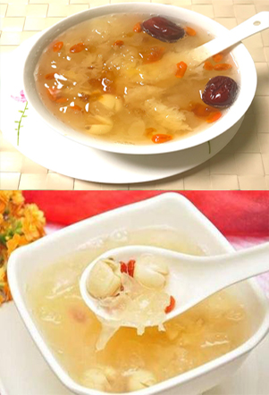

银耳莲子羹

羹浓味甜，口感浓甜润滑，美味可口。此汤具养阴润肺，生津整肠之效，有润肺养胃、美容养颜的功能，适用于伴有涕中带血的鼻咽癌病人和女性朋友。
原料:莲子50克，银耳30克，冰糖100克。做法:先将莲子、银耳分别用清水泡发，捞起。再把莲子、银耳放入碗中，加清水适量，在快半小时后加冰糖、红枣入蒸笼用武火蒸1小时即可。
银耳性平、味甘淡，有滋阴、润肺、养胃、生津、益气、补脑、强心之功效。不但适宜于一切妇孺、病后体虚者，且对女性具有很好的嫩肤美容功效。
莲子性平、味甘涩，有益心、补肾、止泻、固精、安神之效。大枣性温、味甘，其维生素含量为水果之冠。每百克鲜枣所含维生素C的量为柑桔的8-17倍，为香蕉的50-100倍，为苹果的50倍，有活维生素丸之称。有益气补血、健脾和胃、补血脏、治虚损、以及抗癌防癌之功效。银耳莲子糖羹有较强的滋补健身功能，是传统的润肤养颜佳品。
版权所有：舌尖上的美食网